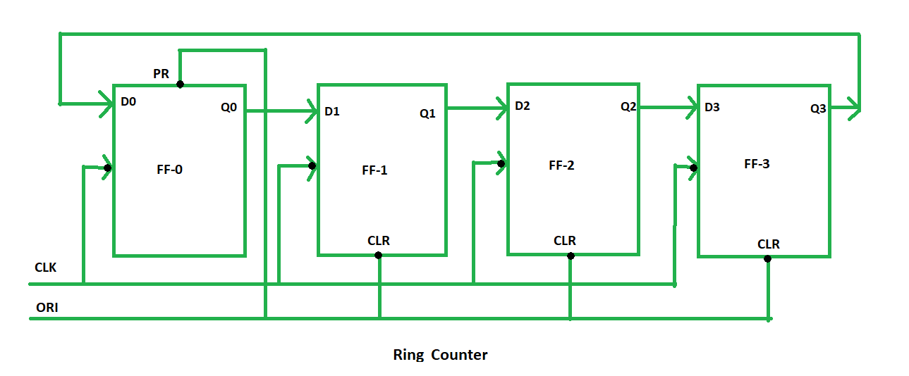

Ring Counter in Digital logic Ring counter is a typical application of Shift resister. Ring counter is almost same as the shift counter. The only change is that the output of the last flip-flop is connected to the input of the first flip-flop in case of ring counter but in case of shift resister it is taken as output. Except this all the other things are same.
No. of states in Ring counter = No. of flip-flop used